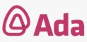
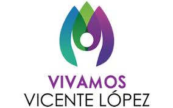
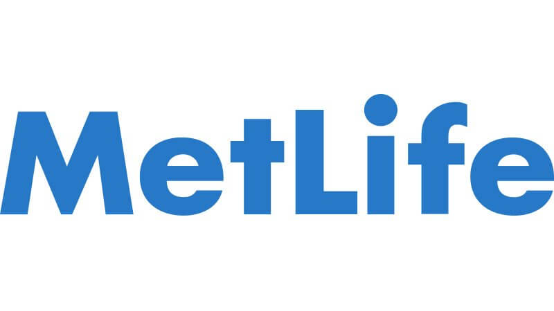

Sobre Mi
Formación

Ada ITW
2020/2021 - Java BackEnd Developer (400 horas)
Java / Spring Boot/ Hibernate
MySQL
Centro Universitario Vicente López / EducacionIT
2021 - Javascript Desarrollador Avanzado (30hs)
2020 - Programación Phyton (42hs)
2020 - Desarrollo Aplicaciones Móviles (48hs)

FabLab Vicente López
2020 - POO en Phyton
2020 - SQL y MySQL
2020 - Introducción Phyton
Microsoft
MCP – Microsoft Certified Professional
1998 - Microsoft - Examen Drake Sylvan Prometric.
“Developing Applications with Microsoft Visual Basic 5.0"
Universidad de Buenos Aires
Facultad de Ingeniería
Licenciatura en Análisis de Sistemas
Cursado hasta 3er. año.
Tecnologías
JAVA
Java es un lenguaje de programación orientado a objetos que se incorporó al ámbito de la informática en los años noventa. La idea de Java es que pueda realizarse programas con la posibilidad de ejecutarse en cualquier contexto, en cualquier ambiente, siendo así su portabilidad uno de sus principales logros.
PYTHON
Python es un lenguaje de programación interpretado cuya filosofía hace hincapié en la legibilidad de su código. Es lenguaje de programación multiparadigma, ya que soporta parcialmente la orientación a objetos, programación imperativa y, en menor medida, programación funcional. Es un lenguaje interpretado, dinámico y multiplataforma.
VISUAL BASIC
Visual Basic (VB) es un lenguaje de programación dirigido por eventos, desarrollado por Alan Cooper para Microsoft. Este lenguaje de programación es un dialecto de BASIC, con importantes agregados. Su primera versión fue presentada en 1991, con la intención de simplificar la programación utilizando un ambiente de desarrollo.
HTML
El Lenguaje de Marcado de Hipertexto (HTML) es el código que se utiliza para estructurar y desplegar una página web y sus contenidos. HTML5 es la quinta revisión del estándar HTML y permite soportar lo último en multimedia.
CSS
CSS (siglas en inglés de Cascading Style Sheets), en español «Hojas de estilo en cascada», es un lenguaje de diseño gráfico para definir y crear la presentación de un documento estructurado escrito en un lenguaje de marcado.
JAVASCRIPT
JavaScript (abreviado comúnmente JS) es un lenguaje de programación interpretado, dialecto del estándar ECMAScript. Se define como orientado a objetos, basado en prototipos, imperativo, débilmente tipado y dinámico.
SQL - JSON - API REST
SQL (Structured Query Language) es un lenguaje de dominio específico, diseñado para administrar información de bases de datos relacionales. API REST define un conjunto de funciones para realizar solicitudes y recibir respuestas a través del protocolo HTTP. JSON (JS Object Notation) es un formato de texto sencillo para el intercambio de datos.
Android Studio - IntelliJ Idea - Visual Studio Code
Android Studio es el entorno de desarrollo integrado oficial para la plataforma Android. IntelliJ IDEA es un entorno de desarrollo integrado (IDE) para el desarrollo de programas informáticos. Visual Studio Code es un editor de código fuente para Windows, Linux, macOS y Web.
GIT GITHUB
GIT es un software de control de versiones, pensando en la eficiencia, la confiabilidad y compatibilidad del mantenimiento de versiones de aplicaciones cuando tienen un gran número de archivos de código fuente. GitHub es una plataforma de desarrollo colaborativo de software para alojar proyectos utilizando el sistema de Git.
Experiencia
ING Insurance
04/2001 a 11/2003
Analista Programadora
Análisis, diseño y desarrollo de nuevas aplicaciones y mantenimiento de las existentes: interfases con CobolAS400, SQLCobol, Visual Basic y bases de datos Oracle.Interfases y desarrollo de impresiones mediante JetFormControl de cartas a clientes, reportes e informes.

División CRM
9/1999 a 03/2001
Consultora/Analista Programadora Vantive
Análisis y Diseño para Customización de distintos módulos del Sistema Vantive 8 (desarrollo en Vantive de objetos deaplicación, creación de ActiveX en Visual Basic 5, package enPL/SQL y Base de Datos Oracle). Capacitaciones en Vantive a programadores.

Metropolitan Life
9/1998 a 9/1999
Analista de Nuevas Tecnologías
Análisis, diseño, desarrollo y mantenimiento de los sistemas de la Empresa: Visual Basic, interfaces con AS400. Análisis y dirección del proyecto de compatibilidad con el Año 2000. Soporte a los usuarios. Generación de listados y reportes de datos.
Inner Consulting S.A.
3/1997 a 8/1998
Analista Programadora
Diseño y Desarrollo de software bajo entorno Windows, integrando tecnología, lenguajes, y herramientas de desarrollo Microsoft (Visual Basic 4 y 5 - MS-SQL). Clientes Principales: Omint S.A., Banco Santander, Telecom –Arnet, COMPAR S.A.